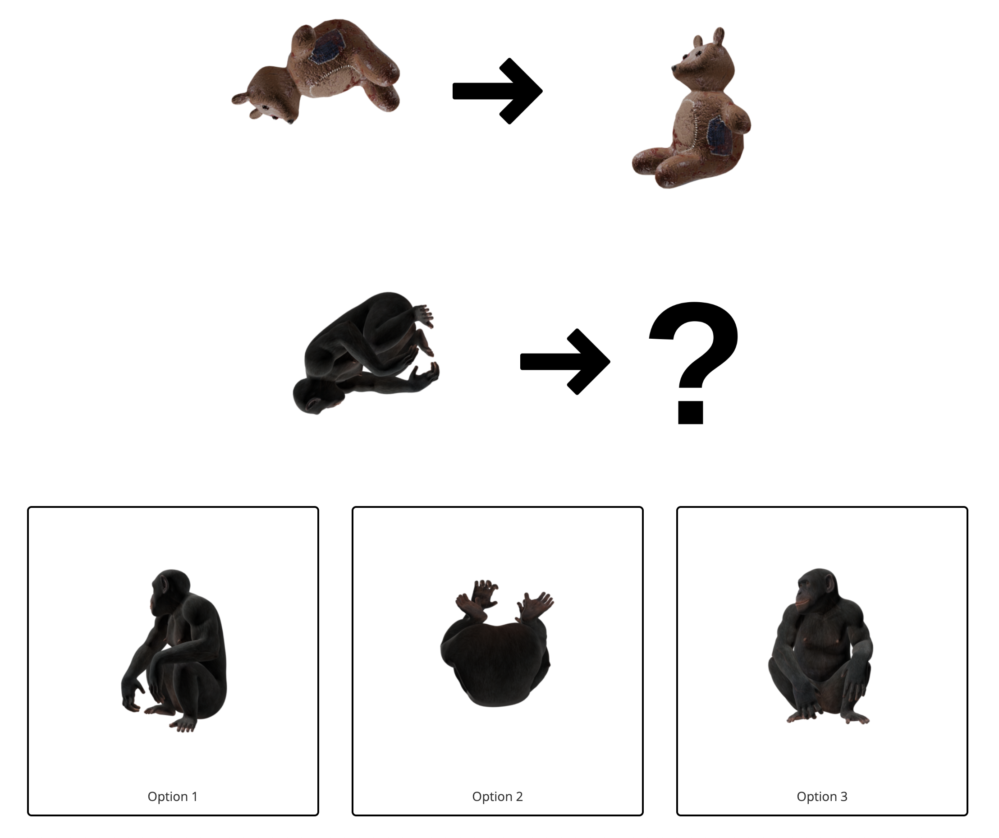

<!DOCTYPE html>
<html>
  <head>
    <title>Object Rotation Judgments</title>
    <script src="https://unpkg.com/jspsych@7.0.0"></script>
    <script src="https://unpkg.com/@jspsych/plugin-html-keyboard-response@1.0.0"></script>
    <script src="https://unpkg.com/@jspsych/plugin-html-button-response@1.0.0"></script>
    <script src="https://unpkg.com/@jspsych/plugin-image-keyboard-response@1.0.0"></script>
    <script src="https://unpkg.com/@jspsych/plugin-image-slider-response@1.0.0"></script>
    <script src="https://unpkg.com/@jspsych/plugin-image-button-response@1.0.0"></script>
    <script src="https://unpkg.com/@jspsych/plugin-preload@1.0.0"></script>
    <script src="https://unpkg.com/@jspsych/plugin-instructions@1.0.0"></script>
    <link href="https://unpkg.com/jspsych@7.0.0/css/jspsych.css" rel="stylesheet" type="text/css" />
    <link rel="stylesheet" href="exp_style.css">
    <script type="text/javascript" src="./socket.io/socket.io.js"></script>
    <script src="functions.js"></script>
    <script src="trial_info/behavior_df.json"></script>
    <style>
    img{
        vertical-align: middle;
    }
    </style>

  </head>
  <body></body>
  <script>
    /* initialize jsPsych */
    var jsPsych = initJsPsych({
      on_finish: function() {
        console.log('Experiment complete!!!');
        //window.location = 'https://akshayjagadeesh.com/'; // 'https://app.prolific.com/submissions/complete?cc=CK5XXXER'
        window.location = 'https://app.prolific.com/submissions/complete?cc=C17P3BED';
        //window.location = 'https://app.prolific.com/submissions/complete?cc=CX03L7YQ';

        //jsPsych.data.displayData();
      }
    });
    var subject_id = jsPsych.data.getURLVariable('PROLIFIC_PID');
    var study_id = jsPsych.data.getURLVariable('STUDY_ID');
    var session_id = jsPsych.data.getURLVariable('SESSION_ID');
    var num_trials = 100;
    var trial_indices = randSampleWithoutReplacement(num_trials, 0, 499);

    console.log('Subject ID: ' + subject_id);
    console.log('Study ID: ' + study_id);
    console.log('Session ID: ' + session_id);
    jsPsych.data.addProperties({
      subject_id: subject_id,
      study_id: study_id,
      session_id: session_id,
    });

    /* create timeline */

    /* preload images */
    var preload = {
      type: jsPsychPreload,
      auto_preload: true,
      images: []
    };

    /* define instructions trial */
    var instructions = {
      type: jsPsychInstructions,
      pages: [
        // First page: Welcome!
        "<p style= 'font-size:200%' ><b>Welcome to our experiment!</b></br></p>" +
        "<p>This is a visual judgment experiment. Let's start off with some instructions. </p>",
        "<p style= 'font-size:300%'><b>Object rotation judgment</b></br></p>" +
        "<p>In this experiment, you will complete a series of trials. On each trial, you will see two images next to each other of the same object, from two different viewpoints. Imagine that the object has been rotated from one pose to another. You will also be shown a third image, of another object - your task is to estimate what this object would look like if it was rotated in the same exact way. </p>" + 
        "<p> This is a multiple choice task, so you will be given 3 options to choose between and you will choose the image which would result from applying the rotation to the second object. You will indicate your response by clicking with your mouse on the image that you want to choose. </p>",
        "<p>Below is an example image of one trial. In the upper row, you see a teddybear, which has been rotated from one pose on the left to another pose on the right. First, observe the two images of the teddy bear and attempt to estimate the angle and direction of rotation, then observe the chimpanzee in the second row. Imagine what the chimpanzee might look like if you applied the same rotation to it. Your task is to choose the image, out of the 3 options in the bottom row, which might result from applying the rotation to the chimpanzee image.</p>" +
        "<p></p>" + 
        "<p>Did you choose option 1? If so, you would have been correct! If not, don't worry - you'll have many more chances to get better as we proceed through the task.</p>",
        "<p>We will now begin the task! We expect this to take approximately 20 minutes. We have placed break points every 4 minutes to give you a chance to take a rest if needed before proceeding. <br> Please do not rush through the task. At the end, you will be rewarded for your effort and for your accurate performance. However, we are also recording your reaction time, so please do not leave your experiment screen running and take breaks outside of the designated break points.</p>" +
        "<p>Remember: your task is to (1) estimate the rotation between the first pair of objects, (2) apply it to the object in the second row, and (3) choose the image which would result from rotating that object accordingly.</p>"+ 
        "<p>Press next to begin the task. Good luck! </p>"
      ],
      show_clickable_nav: true,
      post_trial_gap: 1000,
    };
   
    /* define trial stimuli array for timeline variables */
    //var all_imgs = stimulus_info.all_images;
    var trials = [];
    var duration = 500; // ms
    var stimwidth = 400; // pix

    var stim_dir = "240620_4objs_1056views";

    for (i = 0; i<num_trials; i++){
      idx = trial_indices[i];
      //idx = i;
      trial_meta = trial_info[idx.toString()];
      var obj1a_fn = trial_meta["obj1a_fn"];
      var obj1b_fn = trial_meta["obj1b_fn"];
      var obj2a_fn = trial_meta["obj2a_fn"];
      var obj2b_fn = trial_meta["obj2b_fn"];
      var obj2c_fn = trial_meta["obj2c_fn"];
      var obj2d_fn = trial_meta["obj2d_fn"];
      var choice_order = trial_meta["choice_order"];

      var opt1 = trial_meta["obj2"+choice_order[0]+"_fn"];
      var opt2 = trial_meta["obj2"+choice_order[1]+"_fn"];
      var opt3 = trial_meta["obj2"+choice_order[2]+"_fn"];

      var correct_choice = choice_order.indexOf("b");

//      var fixation = {
//        type: jsPsychHtmlKeyboardResponse,
//        stimulus: '<div style="font-size:60px;">+</div>',
//        choices: "NO_KEYS",
//        trial_duration: 500,
//        data: {
//          task: 'fixation'
//        }
//      };

      const stimuli = {
          obj_1a: stim_dir + '/' +  obj1a_fn + '.png',
          obj_1b: stim_dir + '/' +  obj1b_fn + '.png',
          obj_2a: stim_dir + '/' +  obj2a_fn + '.png',
          choices: [
              { label: 'Option 1', image: stim_dir + '/' + opt1 + '.png' },
              { label: 'Option 2', image: stim_dir + '/' + opt2 + '.png' },
              { label: 'Option 3', image: stim_dir + '/' + opt3 + '.png' }
          ]
      };

      // Create the task trial
      var analogyTask = {
          type: jsPsychHtmlButtonResponse,
          stimulus: `
              <div style="display: flex; justify-content: center; align-items: center; gap: 20px;">

                   
                  
                  
             </div>
             <div style="display: flex; justify-content: center; align-items: center; gap: 20px;">
                  
                   
                 
              </div>
          `,
          choices: stimuli.choices.map(choice => choice.label),
          button_html: stimuli.choices.map(choice => `
              <button class="jspsych-btn" style="border: 2px solid black; padding: 10px; border-radius: 5px; background: white; margin: 10px;">
              <div style="text-align: center;">
                  
                  <div>${choice.label}</div>
              </div>
              </button>
          `),
          prompt: "",
          data: {
            "task": "rotation_judgment",
            "trial_idx": idx,
            "condition": trial_meta["condition"],
            "obj1a_fn": obj1a_fn,
            "obj1b_fn": obj1b_fn,
            "obj2a_fn": obj2a_fn,
            "obj2b_fn": obj2b_fn,
            "obj2c_fn": obj2c_fn,
            "obj2d_fn": obj2d_fn,
            "rotation_axis": trial_meta["rotation_axis"],
            "correct_choice": correct_choice,
            "choice_order": choice_order,
            "choices_in_order": [opt1, opt2, opt3],
           },
          on_finish: function(data){
              // Process the data here if needed
              //console.log(data.response);
              //console.log(data.correct_choice);
              //const buttons = document.querySelectorAll('.jspsych-btn');

              if(data.response == data.correct_choice) {
                //console.log('correct!');
                data.correct = 1;
              } else {
                //console.log('wrong :(');
                data.correct = 0;
              }
              save_trial_to_database(data);
          }
      };

      // Create a feedback trial
      const feedbackTrial = {
          type: jsPsychHtmlKeyboardResponse,
          stimulus: function() {
              const lastTrialData = jsPsych.data.getLastTrialData();
              const wasCorrect = lastTrialData.trials[0].correct; // Access the 'correct' property from the previous trial

              // Provide feedback text based on correctness
              if (wasCorrect) {
                return '<p style="color: green;">Correct!</p><p>Press any key to begin the next trial.</p>';
              } else {
                return '<p style="color: red;">Incorrect.</p><p>Press any key to begin the next trial.</p>';
              }
          },
          choices: "ALL_KEYS", // No response required
          //trial_duration: 2000 // Display feedback for 2 seconds
      };
      //preload.images.push(choices_i[0], choices_i[1]);

      
      trials.push(analogyTask, feedbackTrial);

      if (i>0 && i % 20 == 0){
        var trial_break = {
          type: jsPsychHtmlKeyboardResponse,
          stimulus: '<p></p>',
          prompt: Math.floor(i/20) + ' out of 5 trial blocks complete. Press any key to begin the next block of trials',
        };
        trials.push(trial_break);
      } 

    }
    var postexp_question = {
      type: jsPsychHtmlButtonResponse,
      stimulus: '<p>What strategy did you most frequently use to solve this task?</p>',
      choices: ['Mentally rotated the whole object in my head', 'Focused on matching individual features/parts', 'Selected the choice which matched the pose from viewpoint 2', 'No consistent strategy', 'Didnt think about it, just went with my gut'],
      data: {
        task: 'postquestion',
      },
      on_finish: function(data){
        save_trial_to_database(data)
      }
    };

      // define debrief
    var debrief_block = {
      type: jsPsychHtmlKeyboardResponse,
      stimulus: function() {

        var trials = jsPsych.data.get().filter({task: 'rotation_judgment'});
        var rt = Math.round(trials.select('rt').mean());
        var acc = Math.round(100*trials.select('correct').mean());

        return `<p>You have completed the experiment!</p>
         <p>Your average accuracy was ${acc}%.</p> 
          <p>Your average response time was ${rt}ms.</p>
          <p>Press any key to complete the experiment. Thank you!</p>`;
      }
    };

    // Add to timeline
    var timeline = [];
    timeline.push(preload);
    timeline.push(instructions);
    timeline.push(...trials);
    timeline.push(debrief_block);

    // start the experiment 
    jsPsych.run(timeline);

  </script>
</html>
